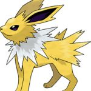

Pokemon.com
Pokemones Electricos
Pikachu
Caracteristicas
Altura: 0.4 m
Peso: 10 kg
Especie: Pokémon ratón
Preevolución: Pichu
Evolución: Raichu
Generación: Primera
Jolteon

Pokemones De Fuego
Charmander